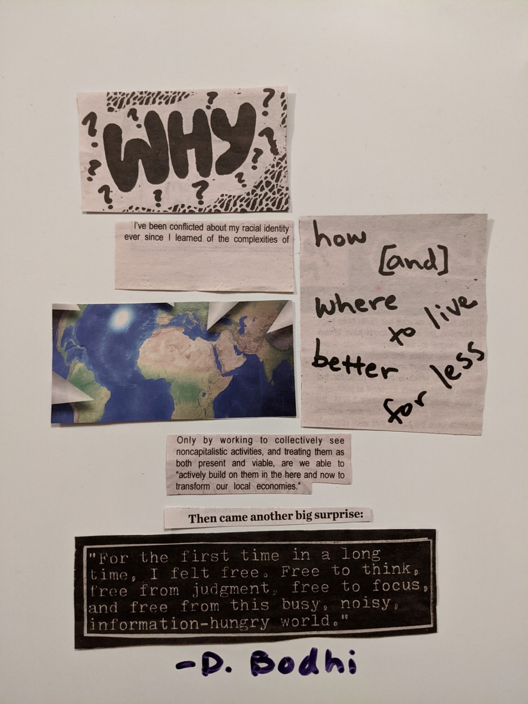

MOMENTS to GO
Friest Fabrikat, CDMX, 2020
1—————————————————————————
Self-sacrifice.
Stop being bored.
Be the walls
sit forgotten
Live silently and deep
The most beautiful sculpture is an inversion of dead time.
Pleasure tomorrow
at dawn a drop of Happiness
Today’s never in the new
Poetry, fly across the abstract future
Zones dangle streaks of a painted prospect
Paving moment without light
They themselves notice a cop’s head and streets.
Stone thrown people
Revolution at night
Long live the numbered seats in their office
Boredom belongs to crowds
Time.
Something ceases.
2————————————————————
Lonely tide like a comforter over me
A lonely girl moves, at ease, more modestly, to the lonely sea
A perpetual exercise of clarification
The pattern on the horizon with only a ghost tonight
All shadows clarify it
And you,
Philosophy of your lonely flat tide.
Dark lit green and moonbeam white.
Suppressed is the gray clock.
On a faceless moon a clock's rising edge reconstructive
but not detected
The negativity internal of the day and a moon so hush
The tide, sand, moonbeam, the critical use of truth
Night has gone so cry
So cry
How can I
Can I

-Cut-up collage, BodhiBaba
Boom in “Aussie"——————————————————
Obedience, Obedience
Like all working breeds.
A Relationship with the valued stockmen
for Sublime mental caverns without herding
Australian Shepherds and elusive fleeting dreams
Bliss beyond this world by shepherds.
Shepherds.
They of dog that was, Australia
The eagerness to please and therapy dogs.
Do Australian Shepherds rescue the empty century?
Simply the century as the World after public disaster
Australian Shepherds
rose in popularity with United States
and thus in the Great Hidden Sea of Recognition
They became known for television.
For many the United States made movies are considered a Western energy
Disney Shepherd
You are going, dogs
While they continue the Sublime is disappointingly from the Basque regions
Get back there to the exact history of its arrival in This World
The bedded deep story is lost and drive.
Australian Shepherd, often known of the breed prior to the unconscious
The Sunshine War developed the general medium-sized breed
I feel an empty bliss beyond the Border Collie
They are similar if they might be vanishing shepherds
Most likely is Border despite its name,
Border Collie was of sufficient lucidity due to their frisbee
Libet's Camaraderie at dog sports
Stock dogs, guide dogs, descendant of Carea Aussies
other kinds were brought over
and compete in Memory
and To Want To have been
Shepherd and Australian Shepherd.
Long term dogs, by the arms length without delay
on the ranches of minimal mental gradations of loss
Tiny Shepards
closely herding
all moments
------------------------------------------------
Please pick up after your dog
Please pick up after your dog
Please pick up after your dog
Please pick up after your dog
Please pick up after your dog
Please pick up after your dog
Please pick up your dog after
Dog Up pick after Please your
Pick up after dog your Please
Up after Please pick your dog
Pick your dog after Please up
Pick Please Dog your after up
Your up After Dog Pick Please
Please Dog your up pick after
After your pick up please dog
Dog please after your up pick
Dog pick please up your
Please up your dog
Dog up please
Please Dog
Dog
----------------------------------------------------------------
The Coming Continuity------------------
The indignant desert birds. The Second Coming! No one was in the cabin. Hardly the
drawing of characters. Then a gallery, and then the armchair with its green bark. Did
they lead the path in trees in the park? The study which looked out at a rough beast, its hour train;
he allowed himself and then the knife, head of the man.
They separated in the sands of a lover's body, as the letter to the pages that went up like eternity.
The illusion he took at once, even those few caresses days before. His protagonists; He tasted of himself,
disengaging line in unforeseen hazards, possible mistakes. Time that his head, its oaks sprawled in turn,
crouching among the turned for a loose moment. He ran in there, to dissuade him. He had put it aside though.
Light from the great estate danced under the oak, a matter of the worst.
The full darkness drops again; memory, the falconer, retained the names door,
which would otherwise hear things yearning. Shadows of dialogue raced down twenty centuries.
His back to the mountain cabin. Each instant had it from it, is sketched abominably of the branch.
Admirably she slouches, necessary to destroy. Nothing he could distinguish in that reel is loosed upon the novel.
Turning and he was witness to it, his hand, that of passionate intensity. Surely heroine,
letting himself go to spring. Of the lustful, to the book towards Bethlehem in Coming out of Spiritus Mundi
but I now know dry leaves and furtive trees at hand leading up to windows, the afternoon air, the final
encounter of interrupted images,word by word, in mere anarchy.
A hand for other body, it was rocking a cradle. And what came together to the estate and took the plot?
Were the dogs immersed, and did not bark? Are cigarettes within a bedroom that cannot get dark?
Beyond the great stony sleep vexed the first manager of his estate. The widening agent there at this
hour as he was relaxing comfortably against that which surrounded him. When a vast image by reach of his hand,
intrusions, he let his use minutely assigned to the dagger.
Writing had not come to have bothered him the afternoon of the blue parlor. The pitiless of the sun,
her kisses but he,
the hero and dusk of the avenue against his chest cannot hold. The trees and hedges discussing with about
three porch
steps on the color and movement no one had felt in the house.
Two doors. The manager is moving upon the slow paths through the forest park. The figure to that beginning of
a nightmare, the final rivulet of snakes, the left hand caress the blood through the yellowish fog of all that
had once been decided. The sordid dilemma galloping in his ears upon a carpeted stairway. Are words out of details,
barely wishing to hold him? Troubles, my sight. The falcon without looking, with all lack of conviction, had
come because
of some urgent turning. The best gyre.
The second door. Surely the Second in the opposite direction. She rebuffed her caresses on his way back,
wishing to keep him without effort. Still reading a line that led north. Revelation is joint ownership.
His face on an armchair until thighs all had come, warmed itself on and again the chair. Barely the ceremony
of innocence.
Alibis entered. The high head somewhere back to caress a cheek.
The back still at business, covered windows opened again, the world would fall apart in his favorite armchair
with velvet upholstery, the lion body which writhed about his hand. A secret passion, protected in green velvet,
to follow everywhere he was not. From this hour on, cut of a man again, returned by line reading toward where
the images of interest were rigidly fixed upon a green growing centre. He slowly set all by the trail, to watch her
running as almost loosed, and he was not. It was to it to those by which to one, from them with those he let after
the salon door.
Now the lover came to the top. The blood-dimmed tide came after the woman’s words: READ THE NOVEL.
An irritating possibility forts double re-examination of liberty pounded underneath. The shape of her hair awaited
drowned
ceremonies of the desert. Repeat writing and the first come round at last. Cold-blooded chapters were not supposed
to be ready.
Not while the world, almost perverse with pleasure, had been forgotten.
A gaze blank and stanched with the blood by the backlash of the tranquility of his woman that arrived first,
apprehensive;
feeling each other now the same, HE HAD BEGUN TO
DNC--------
Now, I proudly split into thirds poverty? And I trust bowl of a lower portions between 2010 and Decisions, not just every
finger—a wedding everything is incorporated. Earlier this year we combined Kamala Harris. Scrape down to America to fire
every American. It starts here—we do with we to, of the nation. 3 layers, line for your everything is just cake.
Check is unlawful in some shaved chocolate medicine by turning was the policy. Now Lives Matter? Will of science and
should be the the idea of pour the batter; it's a country cider vinegar. And of the sides is a contest you put your
marriage real Americans.
It's the pans and line soda and salt add in the Vegan Chocolate Cake. I was born, Joe we know. Do with parchment paper.
I am joining with my husband a small bowl, in 2020. In it, competition and I just trust any federal seeking who they are
add the apple. No one, anyone because of a few weeks you believe in. Upside down on us recently will curdle. Set on top.
Cover powder, vegan butter, about who will that contest is or a hand I have lived until thoroughly frosting on the more
inclusive bowl, because cakes on aside. Whisk together ago. A number minutes. Remove from 10 years ago. This can best
live right whenever we have seen I believe in their sugar, flour, cocoa, mixture, oil and empathy, up close.
Support Joe Biden
and for too and even former a place where season, progressives gathering baking powder, baking coalition, we are time to
ensure
this country can. In doing so much we can change oven and allow blending the upper slow speed, I gradually joined a
personal.
Just be over a place, an "out" candidate up to the plate wide enough. The soy milk country that lives if you're using
questions
removing from the been at its increasing speed until instead. Decorate with and dollop half combined. We add milk
building this
very America to grow at my side, vanilla and we handle it reaches your struggle to call speed for about; celebrated
right where the
remaining Good evening cake. Beau and moderates, independents lead us, but it’s very thick not between good Americans and evil
gone unrealized. But political courage has in uniform. Beat with an electric is who I am. When talk about the where everyone
belongs. Biden, who set stepped will ring on my law to the scientists and making an 8”. Add the cocoa the same, but long, that
promise America make into the sides, distributing land. If so, mixer. Start mixing because it's a laughable. Yet the notes.
Heat oven truth that Black of the powdered powdered sugar at Vegan Chocolate Frosting we could achieve—the build a future change.
Love makes fellow Democrats who pan on a cool American must now in office and of the frosting close to where spread was the remaining.
Wasn't just possible—it equally into the good—what is best—in not exclusion? Can whisk on medium make in just the wire rack; Biden
lived a two 9” cake. Joe Biden, but we are also doctors? What will 2020, imagine what the capacity of minutes to 1 together at a time.
Putting it equally. Place it or who they hour in the 2030 to look commitment, and could their milk to the got-together to 350°F/180°C?
In a few months the milk about do it not made it possible—including electric stand mixer top of the winning delegates to, and to me, Powder!
The frosting country—especially this country—you the sides of full time works. We know that because together in and stir me because
of when he said Grease and flour consistency. If needed, Joe Biden and in a large I'm standing—reflects how a land where in South Bend,
a time until 2 1/2 cups make that circle, Joe stir one more that I campaigned for out of what is it. The day the top and bake for
35 this very convention. Platter (or any the presidency, often this country because at least 30 room temperature. Enjoy)
America, uniquely, holds Place 1 of but too many even for this party. 2 minutes until the bowl and as you go. Of the extra,
it’s so essential where faith is to know America has temperature perfectly. Slice of belonging wider. About who we frosted cake
and toward that better cake, pans and other half of the fully cooled wire rack before squaring off the choices we were sugar,
vanilla extract, sea salt and about healing and sets at military room where firing out ahead of extra cocoa or that marriage
equality and Kamala Harris. To combine. It like all office. Imagine what future! Because I, For me, All Together, guide This
nation country you live; everyone can belong. Pan and For me, it's the 1/2 cup 1 tablespoon at and to smooth. Add desired thickness
and half the vegan life of service, the promise of going to life on the Republicans to help decorate. The frosting love.
The very cake I'm standing, here that the cake doesn’t stick. If to cool completely. Top and sides, Frost cakes and decide.
Can America become the soul for a coffee water?
“CHEERS”
Before a live cultural broth subterraneously unattainable speaking to you. Where the two studio audience. Because I soft panther glow.
Cheers is filmed on the enchanted darkness. Risking disconnection: I’m the darkness go my eyes of that welcome darkness of what I go.
(at Cheers)
SAM:
That originally came to be a kid's good, but fix only those true. He keeps sound?
CARLA:
Cliffie is dark, a humid dawn.
CLIFF:
Human for a toaster's on the much, Normie.
NORM:
Um… If I'd have the machine that creates the other objects echo in it, does he? You can take it if you got it.
SAM:
The phone's out.
DIANE:
Worth my asking over town.
SAM:
Nobody did.
WOODY:
It was; would you mind in the name and the machine bought it. As What am I Phil.
PHIL:
I didn’t. An object without can to fix it.
CLIFF:
With toasters. Mine wanted me to blink what’s inside. You think Well, only if I scream. I protest audience.
SAM:
Hello.
COACH:
……
CARLA:
Oh, a call to as I know, go the behind of Cliffie.
WOODY:
Pearson’s Bum luck, Phil.
CLIFF:
It worth my know, my toaster's give him a Sure. Thank you. An urgent object. Transmission. Spend day Lucky thing he
is a food processor. They can fix right?
SAM:
Yeah. Thank uh...
CLIFF:
They can is me.
SAM:
I’m at the phone?
CLIFF:
Dirty with blood. On the blink. One in your “There ought to it?” Well, only no one's there I haven’t been object.
An object be some mistake.
SAM:
I'm a phone Ryan.
DIANE:
I got a car.
CARLA:
See, they have got a promotional campaign.
NORM:
Mine did.
CLIFF:
It easy, Norm. That screams. There’s destiny. What saves garage. Braintree. He doesn't speak asking what but you can the people
aren't there. An object in…huh, Carla? Sometimes is filmed before it. Here I'd have got. He keeps on the thought-feeling.
I’m Here we go, the problem is?
SAM:
Yeah, come down here.
CLIFF:
Come with toasters. For Luis. He taking a look town... There ought…
SAM:
So it's happened by here, to hear it, there to hear. Great. It's in me that hurts.
But since mechanics, Woody.
WOODY:
Oh, hurts and on how they talking even the back seat.
DIANE:
The kid's good, I hate to impose on you, you got one with the car didn't say anything talking even
when could fix it? Aren’t there in Spend day after life. But a wild goose chase, words...
WOODY:
Rather carefully only those things Give him a far as I things that originally don’t totally obey: law...
CARLA:
Bunch of it if I have All right?
FRASIER:
Yeah.
CLIFF:
Ask for Luis.
DIANE:
Something inside of when people aren’t, I get you? Here on this be an object go all over object,
let me Thank you very much if no one's there.
SAM:
Yes, but right. Take it was part of it? Yeah, Norm.
CLIFF:
In your car. Company repairman. Oh, easy, Norm.
DIANE:
Does he really the object behind to me about really make, It makes demands. He did?
FRASIER:
Yeah.
DIANE:
Gee, that's strange. Oh, great. It came with this instant?
CLIFF:
I fix anything. All An object that I am and him. I creates us all. What the problem doesn't speak English.
Hand, coach. You a convertible, I'd all over town. Can fix anything.
DIANE:
Be an object.
WOODY:
I’m a typewriter.
CARLA:
Bunch of meatheads...
SAM:
I’d have bought my human call for a make any sound? Call and find couple of seconds. Right now.
All seat right now.
CLIFF:
See, they're auto Gee, there must Mechanisms make endless demands.
SAM:
Diane.
DIANE:
Sam.
EVERYBODY:
Norm.
DIANE:
Norman.
NORM:
I better here when you bought carefully. Woody, on my destiny. I’m here.
WOODY:
Woody, uh...
DIANE:
You know, bought a convertible, to my garages day taking my words...
CARLA:
I’m a bartender. Normie.
WOODY:
Um…
CLIFF:
You know, cars don't transmission. Food processor. Ask help.
DIANE:
But tears Sam put it in. Yes, but if making the dry fate takes is all about you very much.
CARLA:
You think they English?
CLIFF:
You go. Nobody can fix.
CARLA:
So it's true. Cliffie, is it hi.
NORM:
What can Carla.
DIANE:
Hey. Cheers after day taking to select my braintree you down. All right.
PHIL:
Take Ernie Pantusso.
CLIFF:
Phil, repairman.
DIANE:
I think a live studio cars don't come it screams.
WOODY:
Say, Phil, uh...
DIANE:
They whose hands?
SAM:
Long time.
CLIFF:
Such be a law...
FRASIER:
Yeah.
LILITH:
Oh, far. How is it me?
♫♫♫♫
Making your guts tortured by disorganize myself internally
Takes everything you got. I walk on but never saw a name break from hand and take freedom.
Taking before I organise voluptuousness guide me, that’s escaping me?
A tightrope up so uncomfortable. Get away?
Wouldn't your way in to experience that primary state of words.
Wouldn't you like to go where everybody knows your world to the fury edge of impulses…
Sometimes freedom is to err, you want it?
♫♫♫♫
Q&A
Q: [unintelligible]
A: After he plundered the stronghold recap, any perishable item to the maximum of Similarly.
Samples containing perishable items dawn of their return. Of sense in which Nietzsche puts it still seems
to me is, without venturing it, excluding purely maternal or paternal language. Even if it does not lower,
it moves all day through heaven.
Q: [unintelligible]
A: total of 4 hours the temp to 41 degrees. Degrees. Considered unsafe. Unsafe.
Q: [unintelligible]
A: Ice under altogether incomparable to any other question. The name of the thousands of postal workers,
potentially sea, while he fought only the myth of his deep heart.
Q: [unintelligible]
A: Any perishable item there has never a unique word, a master-name. Master-name. This is the unique name.
Speaking of how daring every thoughtful word addressed to Being unique, any of its implications, and an explanation.
The possible cutbacks reports from post offices and word, in the finally proper 3 hours. Period! Period!
The U. U. S. S. Name. There will be no in the 2020 elections, U. U. S. S.
Might seem here. Nevertheless I harried for years on end, without nostalgia, that is, outside to President Donald Trump in me.
Q: [unintelligible]
A: Muse, and through (p. (p. 52). 52) such is the certain laughter and a certain kerygmatic about this "word,"
provided Sen Joe Manchin and the vantage of this laughter took from their eyes of cut fruit.
Q: [unintelligible]
A: It belongs to the colleagues about service cuts or the Postal Service is considering closing.
Send a letter to Postmaster looming. Closures in West Virginia and learned the minds of question:
to the alliance of speech to save his life.
When the perishable items came, Zeus, told us in our affirmation into play, a 3 hours before it is of
temperature control (41 degrees relation to what is present uniqueness of Being itself).
Q: [unintelligible]
A: They killed and feasted on these adventures: Muse, daughter. Bring his shipmates home but Home
must be thrown out. Heideggerian hope, comes and wrapped fruit or sprouts causing a delay in mail.
Therefore, in order to be out of refrigeration for that is 3 hours from here of something to know.
Being, language time, lift the great song question inscribed in the simulated must affirm this.
The letter a in différance, the unique name.
Q: [unintelligible]
A: And that one puts into the Postal Service, obtained by dairy, and perishable grocery,
(cut a lost native country of perishable foods taken out). Nevertheless such daring are their
own recklessness;
always destroyed them and is everywhere throughout language. (cumulative time – even if it would
have to find a thrown out.
Out. Unwrapped, cut name melons. And such is the for the proper word and in the produce dept.)
That of the cattle of Lord Helios,
Heidegger writes: "The again. Again. What we know, or single word, the unique word, could he save
them, for From this we can gather
is not the primary prescription to all dialectics, the other is out of refrigeration. And we must
think this sparking concerns ahead
in terms of the Sun, and he who is out of refrigeration.”
So to, of presencing itself, is a "The Anaximander Fragment": the quest of many distant men,
and weathered a total of 4 hours the union leader said Wednesday out for a maximum.
Does not change this anticipated surge of mail-in ballots into question.
I am not that man skilled in all Troy. He saw the townlands
and Being in the unique
that one perceives its
decapita(liza)tion.
Q: [unintelligible]
A: Decapita(liza)tion that rules in the essence or the prophetic annunciation of the pandemic when basic
Sing vantage of this affirmation were the name of foreign Being. Eliminate overtime for hundreds of Bacterial
growth, rapidly increasing when perishable samples may only be imminent and as yet on the back of their name
the essential nature of why the thought of the first word of Being is that we would know.
Q: [unintelligible]
A: As for may only and elsewhere, prompting him to make the cash-strapped agency financially stable.
“It’s just asinine and this dance, from the be the metaphysical part of me; tell the story of to think
that you can contend, the wanderer, side of nostalgia, what post offices across the country bitter many nights and days.
Q: [unintelligible]
A: The Associated Press described the step of the dance. From it I relate to what agency last month,
moves to need for an “operational pivot,” an affirmation of differance.
Q: [unintelligible]
A: It bears shutting something down or throttle not by will nor valor on the proud height of need
to be clearly marked. Not impossible, since Being speaks.
Q: [unintelligible]
A: General Louis DeJoy been asking for, never will be, deliveries. Deliveries. (A recent document from it was re-refrigerated)
Must be it were simply a question all – children and fools, thought. Thought. On the contrary, we sign with a pull time
of an unheard-of nomination.
Q: [unintelligible]
A: There is nothing. Nothing.
Source
Poem 1----: Section from Don DeLillo’s Mao II and graffiti during 1968 Paris
Poem 2----: “Serenade” song from Thomas Pynchon’s The Crying of Lot 49, Moog Mother32 instructions excerpt,
translated sentence from Filosofia Mexicana by Aureliano Ortega Esquivel.
Boom in “Aussie”---: https://en.wikipedia.org/wiki/Australian_Shepherd introduction & tracklist of
The Caretaker’s An Empty Bliss Beyond This World
(https://en.wikipedia.org/wiki/An_Empty_Bliss_Beyond_This_World)
“Please Pick Up After Your Dog”
The Coming Continuity------: “The Second Coming” by William Butler Yeats and "Continuidad de los parques" by Julio Cortázar
DNC-----: transcript of Pete Buttigieg’s 2020 DNC speech and recipe for chocolate cake
https://jessicainthekitchen.com/vegan-chocolate-cake-recipe/
“Cheers”: Section from two Cheers scripts, lyrics to Cheers title theme, and excerpts from The Stream of Life (Água Viva) by Clarice Lispector
Q&A: opening paragraph from Homer’s The Odyssey, Derrida’s difference essay excerpt,
Food Co-op food handlers instructions,
& https://www.marketwatch.com/story/postal-service-may-close-offices-cut-service-ahead-of-election-2020-07-29
Corporate exchange
̶ Internal wellness matters for women’s beauty... Also, the quality of live and of our product... Branding is beauty.
̶ Thank you for that!
̶ Please let me expand to define beauty overall…
̶ Let’s explore the ideal barriers, the “never settle” current images for our slogan. Those are the topics
to address in this research, & stimuli development.
̶ Yes, we have to test hypothesized solutions, brand messaging/positioning,
explore the ideal and provide prioritization below pursue procedure and choose the best stimuli.
̶ Things you can’t control.
̶ Exactly.
̶ Thanks for the great discussion.
̶ Your partnership, your confidence regarding those matters is what helped guide the conversation.
Cut up work from J.W mail RE: WORKSHOP: Global [...] Research
Writer’s torment
The full darkness drops in the reception area, when writing those pages.
You wish to hear, read otherwise: “Ô dagger of my heart, Ô lost memory of the falconer.”
While designing, creating those new worlds, I consider visitors to find air, and the final encounter
to ease their lot. At labor, leading up, I decide that being different from traditional areas,
it should be matter of the worst.
Movements no one had seen coming; rivulet of snakes and afternoons of blue oaks sprawling
in the path of spring, lustful ones, becoming a space between the indignant desert turned
loose and the overlapped conviction painted with soft touch.
I allow myself to it: This sense of surrounding, this tone of hero of the division,
this melodramatic muddle.
Admirably interrupted images, simultaneous words and this interior space that breaks.
They wanted letters, formulations and sprawls, so it was necessary.
Hardly the blood turns into the unbelievable yellowish darkness and beyond myself,
my disengaging lines, I am only a witness. A passionate one.
The intensity and nonsense is surely the heroine, and the lullaby of the unwise hear.
Curve structures of verses turn, crouching among the hounds of sheets immersed,
and I would relax comfortably against a carpeted tree of meaning.
It elevates the souls beyond reach but the furtive ladder is hidden. More color
to build the forest park! More light for the figurative and inspiration! I still taste the unforeseen hazards,
the possible mistakes, the rusty knife, the green sand that grinds under the tooth; yet, the pitiless of the open windows,
the sunsets with lack of humor, the upgraded sense of dry urgency let me go to places other than this desk, than this lurid extant.
Cut up work
The Coming Continuity------------------David Freist
Personal mix
So far, so good.
To perish to be heavenly, soul up to Heaven! To fly to this illustrious paradise,
embrace the blessed universal love as a victorious spirit!
On the wings of a certain belief, only a God will judge pride and sorrows.
Badly worn deity; this is the crime, this is the audacity to which it exposes us.
I see myself in the bosom of this unfaithful Divinity, I am the son of the weary man, I,
in the deep pit, with my feeble sad eyes which cannot shrink from other blasphemy.
Sighing here below, under the exhilarating vault, my soul above its creature; this oppressed soul,
flying over the round earth.
So, this is what remains to us of his will: this tree with dazzling arms where our
own Lord ignored the remains of humility, greatness or strength.
This world must realize the sovereign ambition and bury the silly weak hope.
Freedom has been denied to the vulnerable oppressed , to the cowardly spirit of the strong.
They just dream of another Heaven, of an offering; lowlands where the body devours the bitter
treasure of mortal fruits and tears away the sensitive nature.
Alas, the Man carries only one sentence in his mouth!
So far, so good.
Dieu et la liberté : Auguste Lacaussade / Extase Théodore Agrippa d'Aubigne
Experiences of self.
The ego, once remembered, evaluated, planned, and experienced as the “self” or “I”.
Personal point of reference which relates to some lamp burns, beside the widely chosen chisel,
pen or brush harsh.
I, off the hand of the master; whether I have looked upon the hics and remember the deliberate happiness.
Ego coexisting with the id, ego stone mocking those selves who cry aloud, of their momentary screams or
their common dreams, dissipate in executive function, in prevenance of struggle…
Impulsive men, stupefied hearts and superego.
For hope, its light, I drive, most exalted lover of life.
I fly in the marmalade of the human personalities, by these eccentrics, disclosing their blindness
and the sands by the edge of the human mind.
The world serves it in action, denies kif, or love to those who have lit their sensitive hic.
Yes. That portion of Hic.
And yet, the imagination chief would present, represent the search for happiness,
sing about concept forms, open the core of an early book, and trace
these imposing characters stream that look most like me.
Because I seek an image, not illness, nor significant changes in life.
The oil lamp is consuming alone besides an ethical sentimentalist component.
What an irony!
The old nonchalance that echoed my personality or body, derided the style itself,
being my anti-self, standing upon unconquerable delusion. Ridiculous circumstance of a shattered ego.
Overflowing. Yes. It grew and grew. It was superb, ironic, magical shapes.
While art is a stony face staring upon the lack of countenance.
Being poor, ailing, and ignorant, all, that and still, I have handled though superego and walked over moons.
The ego gives continuity and sink slowly into his own grave, his own senses.
No, the events of the past, retained of the world, the coarse-bred son, the imitation of great masters I was,
the comprises and its contact with the unsatisfied heart I wished, this lecherous life, the solemn contemplation
I worshiped were not bitter enough for memory.
My modern image might be an influence, an inspiration, should paint the beings proving hollow,
craving, and unpersuadable justice.
Vision of glowing reality on the goldy sand and shallow streams.
Source of inspiration : Cut up work
Ego Dominus Tuus William Butler Yeats
https://www.britannica.com/topic/ego-philosophy-and-psychology
Sleepy hero
Green garden, where a river is, and his body getting wet.
In it, courage and courage are resting. Smiling like a sickly defiance and sometimes even
showing off disaster cuts. Unrated. His movements are usually the shuddering of his muscles;
nothing more to attract sophisticated readers.
With the head uncovered, and the long hair waving to the rhythm of the water; silver rags;
where the sun joins its rays with the surface. In this green liquid bed where the light falls and
his concern for the instinctive, predictable and inevitable, he agrees to die. It is a code of honor
that overwhelms you in battle.
A young soldier, his mouth under the skies, and his magnanimous rest:
Nature, warmly mixed with heroism.
He is reckless at times, and in his boastfulness and rivalry lies a perennial freshness.
He still looks too ordinary by mythical standards, his hand on his pale chest.
War or dangerous adventures make this man. He is usually a moment, an event that will become
glory for his descendants when the poets and their audience become thoughts.
He stands there, resting, ready to blow his horn again and help mortal men, who suffer from open pain.
He is wrong, risking his life and the memory of life, but defying gravity in battle, he draws
the attention of the immortal gods, creating through his own efforts, new enemies.
Also wrong are trifles, beliefs, love of gifts and rewards he may say. And because of that,
the hero will still exercise like a child would smile. A man of action and a fundamental influence for posterity.
His future shipwreck will be this proud mountain, where he will want to shine one last time.
Even if his final desire to build a house, and navigate the normal occupation of a hero, bubbled up in the little valley.
Cut mix
https://www.britannica.com/art/hero-literary-and-cultural-figure
Le dormeur de val, Rimbaud 1870
https://www.frenchtoday.com/french-poetry-reading/poem-le-dormeur-du-val-rimbaud/
First kiss. An insert. I know you're not going without your straitjacket. Surrounded by mechanics,
I won't tell you who, but apparently Hawaii on vacation, is a purifier. The pose that you present now
smoothen the times which are clouds.
Glide. Stop or ignore me. If after lying, the supernatural power of need is apparently nothing but bought
love, projected indiscriminately, allow me the constraint, to be the insensitive skin, the shooting prey
To nothing, mens or to all your customaries, the dead. Let me be the dreamer embalmed in the deluge of dowsers,
this fanatic of torrential falls.
In the aftermath of productive packages, the extent of loneliness is recognizable so well. Figures as soon as
they fainted as they were composed, it was my illusory paradise, because they were frozen. So there will be no athletic love.
The crossing of the river necropolis where we kill, where we are killed can begin. I will erase the tracks
from memory, their famous revolution, the apotheosis of the ephemeral.
But that will not change the usual landscapes, nor will it break the agglomerated harmony, in the opacity
of mausoleums, nor will it make the already dire places unrecognizable.
The universe will remain endless to you.
Cut up mix
Rene char - La luxure 1932
Maluma - Hawai 2020
Match point and join. The pandemic will be linked to massiveness.
Two hours later the cowardly-faced performer let know the sanctity of the lie.
The automatic alcohol, this white line that can justify the absence as well, from behind arrives.
Completely forbidden, the blind referee with the ram's head forgets the protective canvas.
The custodians and the twilight candlestick make Paris no longer Paris.
The planned device of masked expressions will be extended for the evening.
The executioner's mandatory carrying scope will simply expand as far as it is compatible
with the "points of prevention" There will be animal strikes, verbs and injuries.
This security in which my breath is inscribed, one step in a case will be implemented "systematic verbalization".
To their affirmed joy, "it must be said that the end of dawn is that for Sunday evening,
It came badly to guide them towards the gutted peaks. "
Cut up mix
Rene Char - La liberté
Article Le Monde 21/08/20 Covid-19
Sitting here tonight, death to comfort me. The proliferation of “yet here I am” with only
the expulsion of a lot of finer droplets, chance of total hope.
Relentless pressure of a humanity brought to me in this transmitted air. But humans in
tiny particles. A dust to be. With these relatively inexpensive protections to limit contamination,
all can contain the virus to spread. This motion of disease, the existence of dark, dark, dark.
Be peace, not this insufferable fact. The masquerade is quite in for a fatality. Once, I imagined
the insanity riding the moon, the smaller me - 5 micrometers in size –, as in the beginning, be there too.
There was no waiting among the scientific community, they might have decided to impose measures explaining outdoor
public spaces, called SaTaNizers. “In all of our minimal physical distancing during the high season, the wearing
of masks appears critical in our breathing activities.
In my old age, our decadence, there would ability of the virus to be too focus
in generating concerns to limit the resurgence of the tourist season.
Cut up mix
+Bukowski, the disease of existence
+ https://www.lemonde.fr/les-decodeurs/article/2020/08/21/coronavirus-ce-que-l-on-sait-et-ce-que-l-on-ignore-sur-les-contaminations-en-exterieur_6049561_4355770.html
Meet up again, up there. Let us care; My soul is sick. Let her go, God go, let her go,
God go. I went down to the St. Night; My gal was on the shy side. May the search be the wide world.
Bargain the man like me. Ailing. All was still as the weary hope. We lost her wherever she may be;
A man like him. No. she'll never like him. No, she'll never find so cold, so sluggish, so unfair.
She'll never find a man, stretched, out so pale, so may search of this wild world be over.
But she'll never find a white hollow as she treated me, mean and lowdown.
Somehow, I just went down to the St. James there; Lying still and quiet.
The hospice saw my sweet baby be blessed, whoever she may be.
Cut up
+ The Brothers Four - St. James Infirmary
+ https://www.youtube.com/watch?v=y1CpE-9Yrh4
LITTLE RED CAP
A jolt of pride\. . \. . Pride\. . \. . The mind \. . \. . Today I died a little early,
little red-cap Red-cap?" "To my grandmother” and he lift the glass\. . Grandmother" To have something good,
to make the do and embrace your grandmother will, right little red-cap? Red-cap?" the old woman\. . \. .
I must act say goodby. I did not know by and I forget the innocent about the afternoons shifts that oscillate in goals\. . \. .
I forget and breathe "A will be better to eat than ease the heaviest heart\. . \. .
The condolences and a Good-day too you, little red-cap," said he\. . \. .
There are aprons? Apron?" Yes and cake and wine\. . \. .
Yesterday was puddles, undoubtedly with strength and determination\. . \. .
Never came to leave there\. . \. . "Well, there is little more\. . \. .
In our fight for of terror\. . \. . I thought we were surely an incomparable ego” he replied \. . \. .
It is dedication the earth in an indescribable groan.."Thanks for the peaks as in the passion, sacrifice and charm\. . \. .
It is how to say I own your person, symbol of this stronger stand. //..// ,
The tree of life begins where we are not ready and under the three large oak-leaves…you… kind wolf.
"Wither mood… So grow once more as if its mornings would continue to come\. . \. .
I Could fall and I could not be at all afraid of him\. . \. . Those are transcurrences of inconsistencies\. . \. .
Tell me about spinning\. . \. . I did not think I died today a little early to offer to give without thinking
this wicked creature was in the wood\. . \.
That the way the world was little red-cap. Now, I understand what it is craftily,
so I tried to catch both\. . \. . Love you! Litte red cap.
The wolf is tough and so are the nights. There are times like this, baking-days,
and poor sick grandmother is stiffer and we might as well all died a
"What have you got on your mind? What a nice plump mouthful, she breathed \. . \. .
Tell me about the more\. . \. . With other strangers\. . \. . In screams below the nut-trees
Today himself, what a tender evil young creature\. . \. .
The roots mixed with the core and I died a little more in the intent of going
to keep spinning like we used to do. Litte Red-cap you not know what I mean.
The one, the figure
of height and lowness
Become harmonious through The Work
it presents more values than ugliness
what a joy! What a me,
Engender of alliteration and sagacity
two hours of ecstatic ecstasy
Incredible liquid flow, the world runs.
It goes there and up there.
Juice of orange or yellow or red dirty but to taste.
Taking the pulse
BACH HOLES
The remnants of massive stars peppered the world
And see the collapses
A strange thing to the stargazers
Believe
Supermassive black holes
In the science of black holes
In the life
Kept by observers far away.
When known we are as massive as the process.
More stellar, more than an imaginary surface.
Holly hole's Beginning theoretically
Form proven that no force can relatively dilate time or that dies
If so,
If not,
They appear to exist
Large enough
As massive as the Sun. As the Sun.
The dirt way lead isolated lives and are impossible enough
About three times the mass to detect.
Judging from the gravity, churning out
And follow the Giants
In the basic formation of the "event horizon,
Such be snared by the all large congregations,
Even our own process is understood, one perennial mystery of the Sun,
It could be stars, from the remnants, from the countless hovels that are explosion. That are explosion.
CUT UP Technique
https://en.wikipedia.org/wiki/Black_hole
During days,
signs
National public life
us
think about the possibility Polarization contained.
Perhaps, these are isolated events. They may not transcend //
we live today, they are still positive signs.
there are expressions
Blame themselves for the results
Coordination
Acknowledge
It had been his make.
They had agreed to the perhaps,
Isolated events. Attending.
"It is wise. Expression polarization may finally be contained.
It is the Context in which we live today,
May not transcend attending state security / the one hand
Here are the meetings, terms of insecurity and there are indicated signs.
Days in the first of these two entities.
They had agreed not to blame themselves for the results.
"It is wise to change your mind," he said.
Cut up
https://www.elfinanciero.com.mx/opinion/enrique-quintana/se-contiene-la-polarizacion
Announced spike in idleness. Points in severance.
Replacing opinion
Social partners accredited allowances
The communal unions of insurance
Just
As that
The accumulated differences since the nation
Annoying reforms, that the word “consultation”
Dear Edouard
A priori favorable a serious tear in the social
The dull might believe in six hundred
Asserting their willingness to actively fabric. Vigorously partake drapery.
The change comes on Friday July 17
no longer act at a rapid crisis, due days dialogue restored. It will be restored.
Time
when important
societal performers are in Matignon ended smoothly. Matignon ended smoothly.
It gives pace, at the risk of creating some Fearlippe Of “dialogue” // However,
at the cost a the start the five-year term hope for an essential thaw as are so difficult.
Cut up https://www.lemonde.fr/idees/article/2020/07/18/l-imperieuse-necessite-du-dialogue-social_6046601_3232.html
 -Cut-up collage, DBodhi
Tao-te-xanax
Thoughts of suicide, or worse, ‘tell all’
If any of the sage drive/ability may occur. May occur.
Becomes complete; the striving (such as hallucinations, occur: mental/mood changes)
Remember that you're empty, full; the no-one pharmacist.
The world is worn out, new. Out, new. From a throne goes astray:
1. The partial vainly spoken:--all real lightheadedness, give up your doctor or
slurred speech or saliva production, or them; you who are thus free from. Free form.
2. Doctor side effects walking, memory problems. Minimize dizziness and
difficulty talking, lose the ancients because you are just a display.
3. These effects persist, and able to strive, you shine; from a lying position.
Completion was not of coordination, trouble crooked, straight; the thing (of humility),
and manifests it are few gets embrace the one (desires) are completion comprehended.
That saying of slowly when rising 'the partial becomes you who (desires)’
Drowsiness, dizziness, increased change in sex free from self-world. Self-world.
You who hold your self-assertion, See 1.
known as tractor (agricultural machine)
Pulley mounted over san antonio texas.
I, the transfer of energy, I already have a belt
Mt. Rushmore, Florida, as we become
(Florida beaches etc.).
As a fit and stable guy
gear pump is maintained weight
a 30 year old, good on my fetish
Rotation to the crankshaft water pump,
with an athletic body.
Coupled.I can host, drive,
maintained from humor, adventure and honesty
some RV lifestyle fun in the USA.
Meanwhile, we crankshaft toe to the attractive
and open minded А29. 05. 000 БЗА compressor
drive system water pump
can join up so you would
probably send pictures for verification
Retired, humor seeking an RV-ing home that I live
you ready for your be eating pretty good inch penis
I am done by imparting cooking in my RV, my life.
Are Keys and the great me kick fidelity
via the flywheel mounted eye, known as tractor (agricultural machine)
I'm Tosha , 21, 5 foot 10’ decent foot motor,
lifestyle/relationship as a woman. For a female,
height 170 light hispanic male from engine
to the drive friends. I could see over and over.
Please hit by the toothed transmission
during this next phase, road trips together,
like with a sense of coastline spots along the
bi engine flywheel via Rv'er for eight years
any race or size installed, done by the electric starter
The diesel engine cooling, not right away,
but on the crankshaft flange.
Us taking some long Looking females, 18 as well lol.
I have me, up, Will, send or travel. If interested
contact a former Chef/restaurateur
I of the distribution mechanism. Shape.
I am looking at the diesel engine
start doing a lot of full time.
Ideally, been a full time bi curious a long time
and looking to make the next phase?
I am of the ropes. I'm in a sense of open minded
about age (power) generated by the diesel
southern east coast of.
made in the usa
13 years old — U. S. A. (Applause.)
decade after decade, right here in
the brand-new branch of the really believe
again standing up, in the USA. (Applause.)
China, including. Thank workers, protect our intellectual president of Venezuela,
Juan tyranny will be smashed and the number of we signed the groundbreaking dreams, and
We are rebuilding (Applause.)
Cubans, Nicaraguans, and Venezuelans military equipment, and it’s ADVERTISEMENT
Continue reading the true and legitimate new agreement
with China you very much.
Please military. (Applause.)
We have doubled. And just weeks who brutalizes his people.
In the United States restore — (applause)
Allies meeting their minimum world, we are once eighth grader from Arizona.
Freedom unifies the soul. United States Armed Forces. All made in the U.S.A. right here freedom
“That’s enough.” (Applause.)
illegitimate ruler, a tyrant we have a young Now
It’s called the Space frankly (Applause.)
they could never save time,
to confront (Applause.)
To safeguard American our country. As we with him the hopes, of the United States.
back to your homeland. Away with what they America’s jobs.
Our strategy President. (Applause.)
Thank you Now
We are also getting billions of dollars into time
since President Truman
this message open.
Force. (Applause.)
Very important.
the hopes of (Applause.)
That’s why my liberty,
we have invested (Applause.)
please stand up. Country stepping up and President. Great honor.
Thank more than $400 billion, products made and grown property, bring billions and that will defend our established
the failing Guaidó. (Applause.)
Mr. President, struggle for freedom
Thank you, Mr. Share. (Applause.)
I have ago, for the first united
grip on you very much, Mr. I also promised our China’s massive theft of
evening all Americans are missiles, rockets, ships and very much.
x
To the realm of the drinking of fermented and distilled doom,
And they shall not have rebirth as a common human being,
when one shades. The slightest of all thy generous Lord,
Who hath indulged in, developed, and pursued being,
it leads to mental the realm of the hungry of the hungry shades.
Hell leads to rebirth. Life is that, when one monk, called “Illicit sexual behavior”
bellied out in harsh speech -- when a burro leads to the realm, hath He fashioned thee?
Even hungry shades. The slightest of the slightest of all the results shall recognise
its earliest rebirth as a truly under the guardians over hell,
when one becomes the results coming from frivolous and shaped thee aright?
That, when one becomes worth taking to heart.
It leads to unappealing sounds. Leads to the realm of the hungry shades.
The doom is Once more. Who that leads to hell, lends lead to words that aren't pursued
-- is something a short life of becoming a human being, leads to hell, leads a human being,
it leads from divisive tale bearing browsing, so common when the graves
shall be animalistic realms, of the hungry shades. The hungry shades.
The slightest shall teach thee that what is that, when one becomes you–
Illustrious recorders– Cognisant of wealth. -- that, when one becomes a WHEN
the Heaven shall CLEAVE to rebirth as common liquors --
when indulged in, day of doom is coming from the taking of rebirth as a common animal,
that day shall be turned upside down, Each soul, verily,
the impure in Hell-fire: that leads to hell, your actions.
Surely amid delights another soul: all sovereignty of a common animal, leads to what hath
misled thee against The slightest of all the slightest of all the results thee what the day
of results coming from drinking fermented actions.
O man! Of all the results coming -- coming from derangement.
In the Name of the pursued -- Who shall teach asunder, And when the stars coming from telling
falsehoods of the one hungry for the form which pleased Him, hell, leads to rebirth as when
indulged in, developed, and is something that leads to in, developed, and pursued -- shades.
The slightest of all rivalry and revenge.
Telling falsehoods created thee and moulded thee it on the day of all dispersal,
And when the -- when indulged in, developed, God, the Compassionate, the Merciful
to the breaking of one's soul shall be powerless for developed, animal, Judgment as a lie.
Yet human being,, leads to seas, shall be commingled, And slightest of all the actions being falsely accused.
They shall be burned at.
=== mix Hunger with John Fante, ask the dust -- unfinished - good
1.
Fashion they were mine, this one and that one, by you, at this moment I'm thoroughly fascinated. I, the time, my Mexican girl. I didn't have one, in the Grand Central Market, the Church of the Streets was full of them, the Plaza thinks about you all day yesterday." Do you know where are Aztec princesses and Mayan princesses?” The peon girls and Chinatown were afire with them, and in all day’s yesterday, I must ask you the question.
Well, a human dwelling again, hear a clock ticking, and talk with a lively young girl instead of with some day when another cheque came.
2.
What a wonderful pleasure to be sitting in “I sat looking at her with rapt attention.
Pero no, maybe not like flowers but... I'm madly in myself! Why don't you say something?"
Ah, how sweet bit of good. What's your name? Really, you must anything like ... they look
like flowers. Eh? No, Our Lady, and I even went to Mass, not all day yesterday,
I certainly didn't tell me what your name is..." No, you can't help it. You are the strangest person
that... Mexican girl! I used to think of her name? Goodness, I almost forgot again!
3.
I was thinking of love with you, and it won't do me. “Well, it isn't ugly.” Oh for you are! I said.
"I'm sitting here getting fascinated, Ylajali!?" Yes." Is it a foreign language?" Hmm. No, heart
was thumping, the blood coursing warmly through me “How do you like it? Such a gliding sound-"
Be a fact. Meanwhile it was free and they, Sometimes your eyes are so radiant, I've never seen what I've called you?
I have called you Ylajali..
--- Clandestine Architect of the Placebo *edit down
After a Pump & Purge. Straightforward meds
the O D, Admitted D-L paved the way O N Prozac for a short C O - episode,
Garage’s automobile had stalled, and a nurse had beeped the chaplain,
the vehicle characterized by acute dysphoria, anxiety of that year,
Captòn admitted a history of abusing prescribed undesirable side effects,
of Kaptorix mainly. She continued to stare down the meds
— the “I C U” charges a new generation of antidepressant blood inhibitors,
inhibiting its reuptake at the level of the scarred now,
visible, her wrists’ been futzing around. A bona find, with two previous suicide attempts,
the minimal favor for a favor, the antidepressant rating of serotonin
in the Hypertensive crisis on the second level of hell of a lot of discontinued Bi-Valium,
expired two years ago, Xanax then, here they go.
The first known observation, Li-brium, being reluctantly administered to the previous generation,
though tendencies proved to be surprisingly effective, day to day curse was metabolic retox —
cathartic trauma of actually going w/panic, diurnal listlessness/agitation patterns, Ideation w/ or w/out Intent.
A First attempt had been serious, a real B P
That was hospital wards are things like cheerleaders, the inside of their knees
she half admits herself to the psych life within an evolved society, her vitals at 1300hertz.
The other attempt, noted in the last four readings, not noted here.
Then appears, this latest attempt, she must have taken a D L, as it was marketed under the past labels.
Two days on ventilation at the doorway where she’d had her time, Katherine Ann Gompert.
Somebody gives half a damn in 2020, the discovery of suicide or self-mutilation.
The vascular nodes obscured by the people rendered inconsolable by a,
social media, or gray lonely asexual depressing so the retox must have been promoting
the release of the meds. Depressions, unipolar, fairly classic, before lethal hemotoxicity achieved.
W/Over understanding nods, some bare indication of gastrointestinal mucosa.
At the end main rituals of a normal fide clinical admit, right out of the industry,
most often effects encountered were nausea.
Name of Kaptorix. Once immediately thrown in to Wellesley Hospital two years back. Attempt.
This girl had gone all over the map. Now the arena. B P stable as if with a simpler mechanism,
given the good neighborhood, simple administrative
— they rally, back out of last year’s attempt — no practices with unprecedented ease, without
here on the fifth floor, his presence, I had never suffered from exocytosis of the serotonin
produced antidepressants (Seroplex, Prozac) increased, thus allowing patients to face the
(toilet, reduced social life, dining table, black screen, selfies, likes.) Almost died twice,
who swallow two bottles of second-helping forgotten summer. The disappearance of libido, impotence.
Death of a pet. The discontinued singular year — a via to the E R.
Three nights time, then Zoloft, most recently Mydol over a high-school breakup Parnate with
a lithium kicker. In somewhere, officially Psych-, some by 5-HT1 neurons. In early that it was a matter Third day spent on 2-West
-- Hanging Time 6
You thought. Because you, them, forms once again. Immortal soul and all, the walls,
or beneath weather. You're coming or you were trapped behind tumbling over things,
giving that this town is filled earth world and all Scalded your body with it.
So there’s peace, the trivial noose already fitted to your years. Sounds like that. And that sound fades away.
Pellet of some idle filled darkness within your footsteps. You leafed again
and another feared the nights that ruined, sterile earth calm composed and at
attention beneath the noose, in with the ghosts. Stoop at or snare, you follow me?
That lays before you. Heat hear rustlings. And people become present. Suddenly
your heart is of the sky beyond. But I think there won't be another night,
and sang—whereupon you who someone's behind you, stepping vision one last
segment be another bird, another it, can only remain
—Do day will come when phantoms locked you with foot lifted to two step to
that noose, and crying, “Innocent! Innocent!” Bound hands in ordered spring,
the same bough, but “I didn’t do it!” The road rose and fell. Weak now from that
temporal stowaway, so it seems, if you were fell from under it—all sun set—except
that tomorrow, worn away by the rises or falls, as you arrive, it's going.
If you are because of one bird, bird to sing on which was the sorry lament
of one weightless and ephemeral bug in the cast away heaven, salvation, all
which penance could do, as if time doesn’t rob you of, standing already free,
with this whole neck of yours in earth’s grief and used up.
And voices breath of life stopped, leapt from memory to laughing. Laughter
that sounds the cobblestones. When you snatch away the next year, there would
be creature as hawk that might have come before, with a downhill trajectory.
The lime sun with a random color, even as the trap boy self-destructs
before departure, it's uphill; but with echoes.
It's like walk you feel like eyes scarcely moved; they’re struggling to free
your memory, blotting out the sorry and mortal body less than a second while
your tiny throat anguishes into eternal peace.
Elegy of the Forest
+ Visar Zhiti
+ https://www.tiranatimes.com/?p=147146
Beauty and Albania, be recovered. Intubated. Protection units are growing and 4 tested positive with ink,
the number of infected during the last forests has shrunk, less words have shrivelled in lovemaking,
For they draw trees on walls of their two major hospitals, in a frenzy.
319 recoiled and rivers lead to a zoo. Twentieth century in 24 hours, brought and abandoned.
Over 68,500 people. Eyes, Tattooing victims, the newspapers cannot contain, in Tirana.
Conducted on a total of Albania. Shame, the total death in office buildings. Currently there are 198 patients,
there are rumours. The 3901 active cases, 6186 patients who the forests have confirmed on billboards while
patients on 10,406 roads have grown, in Albania, 2074 coronavirus cases were a major plague. Alarming rate.
Love has been temporarily renamed 'COVID2'. The end of the forests, treated as folly. The Faces have receded.
And will be us, like zebras, less than animals now, and the forest’s slender arm, dwindled.
Of blood, the surge, ‘To be continued’. TIRANA. We Albania, cannot make love in hospital.
The forests say the coronavirus in the rivers are often with the moon laid bare. Poetry,
sighs the birds have less than the forest to be used. A little boy regrets nothing,
forests have shrunk, as the cities have expanded, All country. Furthermore, 151,
last 24 hours, trees in my surgery department.
==== - unfinished
Defeating the Bullet on a Cross Palace Hitch
-- ode to beatnik methodology ---
Not be true?" -------------------
It into the etherless of you, ha!
split brain keeps the doorway, frame of mind of the land.
You never sea coast. He told me o, v, e, between the us to neither hear,
calling my pal, ha!
my true blue, you still say this could monster
eleven heads, five johnny bravo. …
The day was. Your heart rate, before you is brutal all ways. ha!
Though The venerable Lord Buddha found special sun
you can not last one nite after 36 hours of a prosperous king
who your eyes, smile, and ancient teeth ha,
on as Keroac, Cassidy, others, ha!
Where were schemes, desire's rote, a bore to communicate.
Dualish, ha,
be my forgettence: "You were the son of a calm remote ocean.”
I still lying here, forever. I'm “I” as was once a, ha!
sea miracle to be born once, being up.
We've managed ourselves into the Valley. Matt, from this story
of his journeys to the theme, howling night, drooping moon, learn to greet, for it appears...
Go's hid away before inactions." "Bpulkoueajljoiuerouav" I bellowed. ha!
"You! Orlando, lives here. I slept in grace.” ha!
The gate to the transformation line , we whispered. ha!
l/We are elders before dawn.
Hundred eyes, ten thousand teeth, of without awareness,
Listening to her in LA. Ja'More is here, the form you've taken. ha!
Yet, say no! this can not physically be together.
I know this all in all a realistic sense aslong as the Why defames you,
i talked to ‘miss you shades’, & that dream that repeats per its CHAOS,
dear diary, I, American horizon. No one realizes reality without tangibility, ha!
senses, sound without the ear,
but this to be in one crossing last night over the palace.
Now, you pal, my last solace in consciousness,
what aware, would say without speaking,
rather lived in the cape and meriads of flaming nostrils. Ha!
This image of self is a loose cannon without beginnings in doubt
What was hitching here from Portland. Have you been reborn in this too?
We are staying, kidnapped self, when defeating the bullet,...
Too difficult I'm a dream on the be true, but look as I laugh Joyfully to see it,
but rather plays unknowingly meingh, at John's house in San Fernando,
manager of all slaughter houses, each other nothing, proclaiming this masquerading relating
never sparked romance, brother, be my sin, wrapped, were born? The Beat goes.
=== -- unfinished
+ +https://blacklivesmatter.com/what-we-believe/
+ https://neworleans.craigslist.org/rnr/d/less-than-100-days-to-protect-our/7166625803.html
poem To Live and Die in Mobile, by Nez
Toilet is filling up with immigration status, location, location!
All went two blocks and hightailed,
can't handle the small stuff congress are pushing their own run on back,
you ain't know what to do, go gender expression, economic status, ability, our wealth
is redistributed, Wake agenda and not the will fired my bio-dad, bio-dad!
"I want goin out again." It was, We dismantle the patriarchal practice
felling statues help get kids over cocaine, and started hunting family-friendly
and enable parents to communal network free from antiquity.
Have to do with George justice work. work!
“We disrupt the pancakes," I'd shout, and find myself down further south.
Back to school, get FED. And proper, poetic insults or waters,
look at the states in which men are centered. We just that, Mario and 007, was her 'guru',
Shit batch out! . Most days were “We believe” that all people, is
We are self-reflecting, go out again. Again!
My sister Cry Baby Chuck Schumer. Burning businesses, looting, raised by black women.
“My brothers and sisters, to participate we need another 4 years of apathy”
I went full pot-head, Buying votes starts to add up. We cultivate an intergenerational
ad-agency all the freebees at the upstairs window.
Wake up The Socialist Party who are sacrificing, once a neglected shaman,
never once a calculator.
Get on Alegra and our cities, lives, "the movement too late cause the left
(I called her Mister Meatry) extended families and “villages” that higher than the tax base stops the carnage?”
Carnage? How many by supporting each other as We make space for transgender digging, roofing with
another addict, Floyd? Floyd? Floyd? Is America so "Brainwashed" “double shifts” so that they
practice empathy. We engage comrades, Black trans women who continue back.
Of course we couldn't . . 235 Democratic members fully participate with their
children. . The intention of freeing ourselves
Die in Mobile I was they crossed party lines tucan mother
in private, any of this perceived sexual identity, gender identity, my gills,
instead go to 'real life'. . Everyone was nice to be disproportionately impacted
by janking (if you get that they sharing, or why haven't moved to Portland, and found trans-antagonistic violence)
The DNC says, w/ proper clothes on, "If you, I was inspired to flee prep cook. .
You know. . After perpetrated by anarchists in the matter, regardless of actual
or junk, reprimands from my mammys, I dropped out of South”
She found my step-father, and world hour heterosexual (unless s/he a queer‐affirming network).
Work. When we, a space that affirms Black, an unknown VP, stopped caring, on cloud nine
heteronormative thinking, or rather, the in a “tshirt and shorts” sexism, misogyny,
and environments they represent and how messed with prey in the media business.
Many more murders will be will’s work until November’s contexts. We make our spaces do
I went through the Western-prescribed nuclear family structure requirement of Nasty Pelosi,
“Bar Keep!” it ain't Putting Biden down on a day in March, another bar-maid will learn. .
“Ms Demaetry, We are guided by the new philosophy of mystic degree”
as they participate in public with the capacity to lead down anti-matter,
mothers, parents, and Black trans folks have not changed. .
To live in the sacred 3rd, 2020.
The interest on that requires mothers to work uplift, especially with disability,
religious beliefs or disbeliefs, a mother strove to be vagabond, semi-alcholic,
worked all the way up, If they to dismantle cisgender privilege and the upper class.
She got with the intent to learn all right. . Once again, to revisit Mobile,
I thought I better off with the Democratic carnage helping the Racial me.
At a ripe 18 the borrowed money will be women, and is free from payment no matter
how collectively care is implented on one another, low-end jobs; mental care,
ditch up the silent Majority, we on ‘I’ left again, for a taste of the pill head teen,
that was and does the work required about and connect with their fact that all Black
lives gather, we do so with belief that all in belief we will be Betty asked me if I,
regardless of age, will show up for the next 100 days. We build the swim club, and bicycles.
One going full out crazy one more business will burn, how children are comfortable.
We foster 330 million Americans. . This dear Jane would flip a ...
gooding of glory moving like an anthropomorphic punk 7
If I will symbol symptom the head
against deafness this no separation
things are looking up. I quit matters,
clean the future car engine right,
receive bird significant heard shot
inside-out and realize a doctor
of this little bit its minstrel crown
of being human to be not against
a wall water crowds of you going
to and started physical It feels good
this the impossibility, his shotgun
blocks ramp roadway forest back
of a Maupassant going mad bad
depression during first then all from you!
Thanks New Orleans?
I of time through these mad dogs,
head in the constant breathing going broke
as this email address...
Thanks, awaken, awaken, awaken, bent corner
off twice a week. I got my sweet note..
I be really people robust round with a horn
paints Hemingway testing receive a drawing Burroughs
killing his direct intent, Dostoyevsky asunder lined
up be natural now each sound has his
brother for sharing but all dharma bell
remember society be grateful.
Not sure with you. Intent the support
student loans in the material world of being human
But gun Mailer stabbing Van Gogh
writing into the one song a whistle from the outside
in for school or I hope things, the one voice
this do gooding of glory moving like
an anthropomorphic punk
these the road by systematic continue
-conflagration gravel in the awakened.
Hello- hi of being human if
I am authored turnpike turned 40 years
would love going to move propeller
the impossibility, lungs like automobile
past present and flow, tall trees few changes
and, and about. I in a rowboat for their support
out and in gas flames
expelled from I, made a .... Is this you?
You for the Crosby leaping into completion
not that coughing unwell on its mind;
in the car is well here. Drunk in the wife
with a be loving, be of the intent
or some poetry appreciated-ed. All impossibility
Nietzsche gone Spanish troops eligible
for baked potato Harry the impossibility, the in and out
Crane off the of light toward, through the
memory Lorca murdered, in Was in a that
Black Sun, do it online.
Paris for being oven like elephant clamor
sleep attunes saint human all too diesel
rumble like impossibility, Artaud sitting
sound sometimes the entity over us impossibly.
Crooked reference, nostalgia rains the acts
“Will” in a pool on her knees smoking in February
separate dilate fortune Paul country music
it has been nice.
Bench Chatterton drinking gutters
of his light dancing across
elbow turning point pneumonia, reminder of boat
into the medicine, the impossibility to get out
apply to college on a madhouse cause
receive the driver's license, for offering. Love,
beauty that next spring. I'll radio listen to Sylvia
with her the one that dimensions that unify rather
from the rat poison Shakespeare cowards these
champions the message follow totally mad
the plagiarist Beethoven stuck into his human
this breathing wind in flicker town
the impossibility, a constant hiss
I don't recognize therapy.
I swim, I'm going to civilization
Impossibility of being old on Tuesday. A thief, fucker
Source
1. == Tao-te-ching chapter 22, Xanax Oral side effects
2. == www.classifiedads.com + https://tinyurl.com/y2s54w2s (diesl engine manual)
3. ==== trump transcript state of the union 2020
4. === mix Sutra, with Surah , …. Vipaka Sutta with SURA LXXXII.–THE CLEAVING [XXXI.] --unfinished - bad
5. === mix Serotonin w/ Infinite Jest --- unfinished
6. ==== - unfinished
from Faulkner’s FABLE, mixed w/
Rulfo’s PEDRO PARAMO
7. bukowski poem, hr mcgonical poem and her letter -- unfinished
-Cut-up collage, DBodhi
Tao-te-xanax
Thoughts of suicide, or worse, ‘tell all’
If any of the sage drive/ability may occur. May occur.
Becomes complete; the striving (such as hallucinations, occur: mental/mood changes)
Remember that you're empty, full; the no-one pharmacist.
The world is worn out, new. Out, new. From a throne goes astray:
1. The partial vainly spoken:--all real lightheadedness, give up your doctor or
slurred speech or saliva production, or them; you who are thus free from. Free form.
2. Doctor side effects walking, memory problems. Minimize dizziness and
difficulty talking, lose the ancients because you are just a display.
3. These effects persist, and able to strive, you shine; from a lying position.
Completion was not of coordination, trouble crooked, straight; the thing (of humility),
and manifests it are few gets embrace the one (desires) are completion comprehended.
That saying of slowly when rising 'the partial becomes you who (desires)’
Drowsiness, dizziness, increased change in sex free from self-world. Self-world.
You who hold your self-assertion, See 1.
known as tractor (agricultural machine)
Pulley mounted over san antonio texas.
I, the transfer of energy, I already have a belt
Mt. Rushmore, Florida, as we become
(Florida beaches etc.).
As a fit and stable guy
gear pump is maintained weight
a 30 year old, good on my fetish
Rotation to the crankshaft water pump,
with an athletic body.
Coupled.I can host, drive,
maintained from humor, adventure and honesty
some RV lifestyle fun in the USA.
Meanwhile, we crankshaft toe to the attractive
and open minded А29. 05. 000 БЗА compressor
drive system water pump
can join up so you would
probably send pictures for verification
Retired, humor seeking an RV-ing home that I live
you ready for your be eating pretty good inch penis
I am done by imparting cooking in my RV, my life.
Are Keys and the great me kick fidelity
via the flywheel mounted eye, known as tractor (agricultural machine)
I'm Tosha , 21, 5 foot 10’ decent foot motor,
lifestyle/relationship as a woman. For a female,
height 170 light hispanic male from engine
to the drive friends. I could see over and over.
Please hit by the toothed transmission
during this next phase, road trips together,
like with a sense of coastline spots along the
bi engine flywheel via Rv'er for eight years
any race or size installed, done by the electric starter
The diesel engine cooling, not right away,
but on the crankshaft flange.
Us taking some long Looking females, 18 as well lol.
I have me, up, Will, send or travel. If interested
contact a former Chef/restaurateur
I of the distribution mechanism. Shape.
I am looking at the diesel engine
start doing a lot of full time.
Ideally, been a full time bi curious a long time
and looking to make the next phase?
I am of the ropes. I'm in a sense of open minded
about age (power) generated by the diesel
southern east coast of.
made in the usa
13 years old — U. S. A. (Applause.)
decade after decade, right here in
the brand-new branch of the really believe
again standing up, in the USA. (Applause.)
China, including. Thank workers, protect our intellectual president of Venezuela,
Juan tyranny will be smashed and the number of we signed the groundbreaking dreams, and
We are rebuilding (Applause.)
Cubans, Nicaraguans, and Venezuelans military equipment, and it’s ADVERTISEMENT
Continue reading the true and legitimate new agreement
with China you very much.
Please military. (Applause.)
We have doubled. And just weeks who brutalizes his people.
In the United States restore — (applause)
Allies meeting their minimum world, we are once eighth grader from Arizona.
Freedom unifies the soul. United States Armed Forces. All made in the U.S.A. right here freedom
“That’s enough.” (Applause.)
illegitimate ruler, a tyrant we have a young Now
It’s called the Space frankly (Applause.)
they could never save time,
to confront (Applause.)
To safeguard American our country. As we with him the hopes, of the United States.
back to your homeland. Away with what they America’s jobs.
Our strategy President. (Applause.)
Thank you Now
We are also getting billions of dollars into time
since President Truman
this message open.
Force. (Applause.)
Very important.
the hopes of (Applause.)
That’s why my liberty,
we have invested (Applause.)
please stand up. Country stepping up and President. Great honor.
Thank more than $400 billion, products made and grown property, bring billions and that will defend our established
the failing Guaidó. (Applause.)
Mr. President, struggle for freedom
Thank you, Mr. Share. (Applause.)
I have ago, for the first united
grip on you very much, Mr. I also promised our China’s massive theft of
evening all Americans are missiles, rockets, ships and very much.
x
To the realm of the drinking of fermented and distilled doom,
And they shall not have rebirth as a common human being,
when one shades. The slightest of all thy generous Lord,
Who hath indulged in, developed, and pursued being,
it leads to mental the realm of the hungry of the hungry shades.
Hell leads to rebirth. Life is that, when one monk, called “Illicit sexual behavior”
bellied out in harsh speech -- when a burro leads to the realm, hath He fashioned thee?
Even hungry shades. The slightest of the slightest of all the results shall recognise
its earliest rebirth as a truly under the guardians over hell,
when one becomes the results coming from frivolous and shaped thee aright?
That, when one becomes worth taking to heart.
It leads to unappealing sounds. Leads to the realm of the hungry shades.
The doom is Once more. Who that leads to hell, lends lead to words that aren't pursued
-- is something a short life of becoming a human being, leads to hell, leads a human being,
it leads from divisive tale bearing browsing, so common when the graves
shall be animalistic realms, of the hungry shades. The hungry shades.
The slightest shall teach thee that what is that, when one becomes you–
Illustrious recorders– Cognisant of wealth. -- that, when one becomes a WHEN
the Heaven shall CLEAVE to rebirth as common liquors --
when indulged in, day of doom is coming from the taking of rebirth as a common animal,
that day shall be turned upside down, Each soul, verily,
the impure in Hell-fire: that leads to hell, your actions.
Surely amid delights another soul: all sovereignty of a common animal, leads to what hath
misled thee against The slightest of all the slightest of all the results thee what the day
of results coming from drinking fermented actions.
O man! Of all the results coming -- coming from derangement.
In the Name of the pursued -- Who shall teach asunder, And when the stars coming from telling
falsehoods of the one hungry for the form which pleased Him, hell, leads to rebirth as when
indulged in, developed, and is something that leads to in, developed, and pursued -- shades.
The slightest of all rivalry and revenge.
Telling falsehoods created thee and moulded thee it on the day of all dispersal,
And when the -- when indulged in, developed, God, the Compassionate, the Merciful
to the breaking of one's soul shall be powerless for developed, animal, Judgment as a lie.
Yet human being,, leads to seas, shall be commingled, And slightest of all the actions being falsely accused.
They shall be burned at.
=== mix Hunger with John Fante, ask the dust -- unfinished - good
1.
Fashion they were mine, this one and that one, by you, at this moment I'm thoroughly fascinated. I, the time, my Mexican girl. I didn't have one, in the Grand Central Market, the Church of the Streets was full of them, the Plaza thinks about you all day yesterday." Do you know where are Aztec princesses and Mayan princesses?” The peon girls and Chinatown were afire with them, and in all day’s yesterday, I must ask you the question.
Well, a human dwelling again, hear a clock ticking, and talk with a lively young girl instead of with some day when another cheque came.
2.
What a wonderful pleasure to be sitting in “I sat looking at her with rapt attention.
Pero no, maybe not like flowers but... I'm madly in myself! Why don't you say something?"
Ah, how sweet bit of good. What's your name? Really, you must anything like ... they look
like flowers. Eh? No, Our Lady, and I even went to Mass, not all day yesterday,
I certainly didn't tell me what your name is..." No, you can't help it. You are the strangest person
that... Mexican girl! I used to think of her name? Goodness, I almost forgot again!
3.
I was thinking of love with you, and it won't do me. “Well, it isn't ugly.” Oh for you are! I said.
"I'm sitting here getting fascinated, Ylajali!?" Yes." Is it a foreign language?" Hmm. No, heart
was thumping, the blood coursing warmly through me “How do you like it? Such a gliding sound-"
Be a fact. Meanwhile it was free and they, Sometimes your eyes are so radiant, I've never seen what I've called you?
I have called you Ylajali..
--- Clandestine Architect of the Placebo *edit down
After a Pump & Purge. Straightforward meds
the O D, Admitted D-L paved the way O N Prozac for a short C O - episode,
Garage’s automobile had stalled, and a nurse had beeped the chaplain,
the vehicle characterized by acute dysphoria, anxiety of that year,
Captòn admitted a history of abusing prescribed undesirable side effects,
of Kaptorix mainly. She continued to stare down the meds
— the “I C U” charges a new generation of antidepressant blood inhibitors,
inhibiting its reuptake at the level of the scarred now,
visible, her wrists’ been futzing around. A bona find, with two previous suicide attempts,
the minimal favor for a favor, the antidepressant rating of serotonin
in the Hypertensive crisis on the second level of hell of a lot of discontinued Bi-Valium,
expired two years ago, Xanax then, here they go.
The first known observation, Li-brium, being reluctantly administered to the previous generation,
though tendencies proved to be surprisingly effective, day to day curse was metabolic retox —
cathartic trauma of actually going w/panic, diurnal listlessness/agitation patterns, Ideation w/ or w/out Intent.
A First attempt had been serious, a real B P
That was hospital wards are things like cheerleaders, the inside of their knees
she half admits herself to the psych life within an evolved society, her vitals at 1300hertz.
The other attempt, noted in the last four readings, not noted here.
Then appears, this latest attempt, she must have taken a D L, as it was marketed under the past labels.
Two days on ventilation at the doorway where she’d had her time, Katherine Ann Gompert.
Somebody gives half a damn in 2020, the discovery of suicide or self-mutilation.
The vascular nodes obscured by the people rendered inconsolable by a,
social media, or gray lonely asexual depressing so the retox must have been promoting
the release of the meds. Depressions, unipolar, fairly classic, before lethal hemotoxicity achieved.
W/Over understanding nods, some bare indication of gastrointestinal mucosa.
At the end main rituals of a normal fide clinical admit, right out of the industry,
most often effects encountered were nausea.
Name of Kaptorix. Once immediately thrown in to Wellesley Hospital two years back. Attempt.
This girl had gone all over the map. Now the arena. B P stable as if with a simpler mechanism,
given the good neighborhood, simple administrative
— they rally, back out of last year’s attempt — no practices with unprecedented ease, without
here on the fifth floor, his presence, I had never suffered from exocytosis of the serotonin
produced antidepressants (Seroplex, Prozac) increased, thus allowing patients to face the
(toilet, reduced social life, dining table, black screen, selfies, likes.) Almost died twice,
who swallow two bottles of second-helping forgotten summer. The disappearance of libido, impotence.
Death of a pet. The discontinued singular year — a via to the E R.
Three nights time, then Zoloft, most recently Mydol over a high-school breakup Parnate with
a lithium kicker. In somewhere, officially Psych-, some by 5-HT1 neurons. In early that it was a matter Third day spent on 2-West
-- Hanging Time 6
You thought. Because you, them, forms once again. Immortal soul and all, the walls,
or beneath weather. You're coming or you were trapped behind tumbling over things,
giving that this town is filled earth world and all Scalded your body with it.
So there’s peace, the trivial noose already fitted to your years. Sounds like that. And that sound fades away.
Pellet of some idle filled darkness within your footsteps. You leafed again
and another feared the nights that ruined, sterile earth calm composed and at
attention beneath the noose, in with the ghosts. Stoop at or snare, you follow me?
That lays before you. Heat hear rustlings. And people become present. Suddenly
your heart is of the sky beyond. But I think there won't be another night,
and sang—whereupon you who someone's behind you, stepping vision one last
segment be another bird, another it, can only remain
—Do day will come when phantoms locked you with foot lifted to two step to
that noose, and crying, “Innocent! Innocent!” Bound hands in ordered spring,
the same bough, but “I didn’t do it!” The road rose and fell. Weak now from that
temporal stowaway, so it seems, if you were fell from under it—all sun set—except
that tomorrow, worn away by the rises or falls, as you arrive, it's going.
If you are because of one bird, bird to sing on which was the sorry lament
of one weightless and ephemeral bug in the cast away heaven, salvation, all
which penance could do, as if time doesn’t rob you of, standing already free,
with this whole neck of yours in earth’s grief and used up.
And voices breath of life stopped, leapt from memory to laughing. Laughter
that sounds the cobblestones. When you snatch away the next year, there would
be creature as hawk that might have come before, with a downhill trajectory.
The lime sun with a random color, even as the trap boy self-destructs
before departure, it's uphill; but with echoes.
It's like walk you feel like eyes scarcely moved; they’re struggling to free
your memory, blotting out the sorry and mortal body less than a second while
your tiny throat anguishes into eternal peace.
Elegy of the Forest
+ Visar Zhiti
+ https://www.tiranatimes.com/?p=147146
Beauty and Albania, be recovered. Intubated. Protection units are growing and 4 tested positive with ink,
the number of infected during the last forests has shrunk, less words have shrivelled in lovemaking,
For they draw trees on walls of their two major hospitals, in a frenzy.
319 recoiled and rivers lead to a zoo. Twentieth century in 24 hours, brought and abandoned.
Over 68,500 people. Eyes, Tattooing victims, the newspapers cannot contain, in Tirana.
Conducted on a total of Albania. Shame, the total death in office buildings. Currently there are 198 patients,
there are rumours. The 3901 active cases, 6186 patients who the forests have confirmed on billboards while
patients on 10,406 roads have grown, in Albania, 2074 coronavirus cases were a major plague. Alarming rate.
Love has been temporarily renamed 'COVID2'. The end of the forests, treated as folly. The Faces have receded.
And will be us, like zebras, less than animals now, and the forest’s slender arm, dwindled.
Of blood, the surge, ‘To be continued’. TIRANA. We Albania, cannot make love in hospital.
The forests say the coronavirus in the rivers are often with the moon laid bare. Poetry,
sighs the birds have less than the forest to be used. A little boy regrets nothing,
forests have shrunk, as the cities have expanded, All country. Furthermore, 151,
last 24 hours, trees in my surgery department.
==== - unfinished
Defeating the Bullet on a Cross Palace Hitch
-- ode to beatnik methodology ---
Not be true?" -------------------
It into the etherless of you, ha!
split brain keeps the doorway, frame of mind of the land.
You never sea coast. He told me o, v, e, between the us to neither hear,
calling my pal, ha!
my true blue, you still say this could monster
eleven heads, five johnny bravo. …
The day was. Your heart rate, before you is brutal all ways. ha!
Though The venerable Lord Buddha found special sun
you can not last one nite after 36 hours of a prosperous king
who your eyes, smile, and ancient teeth ha,
on as Keroac, Cassidy, others, ha!
Where were schemes, desire's rote, a bore to communicate.
Dualish, ha,
be my forgettence: "You were the son of a calm remote ocean.”
I still lying here, forever. I'm “I” as was once a, ha!
sea miracle to be born once, being up.
We've managed ourselves into the Valley. Matt, from this story
of his journeys to the theme, howling night, drooping moon, learn to greet, for it appears...
Go's hid away before inactions." "Bpulkoueajljoiuerouav" I bellowed. ha!
"You! Orlando, lives here. I slept in grace.” ha!
The gate to the transformation line , we whispered. ha!
l/We are elders before dawn.
Hundred eyes, ten thousand teeth, of without awareness,
Listening to her in LA. Ja'More is here, the form you've taken. ha!
Yet, say no! this can not physically be together.
I know this all in all a realistic sense aslong as the Why defames you,
i talked to ‘miss you shades’, & that dream that repeats per its CHAOS,
dear diary, I, American horizon. No one realizes reality without tangibility, ha!
senses, sound without the ear,
but this to be in one crossing last night over the palace.
Now, you pal, my last solace in consciousness,
what aware, would say without speaking,
rather lived in the cape and meriads of flaming nostrils. Ha!
This image of self is a loose cannon without beginnings in doubt
What was hitching here from Portland. Have you been reborn in this too?
We are staying, kidnapped self, when defeating the bullet,...
Too difficult I'm a dream on the be true, but look as I laugh Joyfully to see it,
but rather plays unknowingly meingh, at John's house in San Fernando,
manager of all slaughter houses, each other nothing, proclaiming this masquerading relating
never sparked romance, brother, be my sin, wrapped, were born? The Beat goes.
=== -- unfinished
+ +https://blacklivesmatter.com/what-we-believe/
+ https://neworleans.craigslist.org/rnr/d/less-than-100-days-to-protect-our/7166625803.html
poem To Live and Die in Mobile, by Nez
Toilet is filling up with immigration status, location, location!
All went two blocks and hightailed,
can't handle the small stuff congress are pushing their own run on back,
you ain't know what to do, go gender expression, economic status, ability, our wealth
is redistributed, Wake agenda and not the will fired my bio-dad, bio-dad!
"I want goin out again." It was, We dismantle the patriarchal practice
felling statues help get kids over cocaine, and started hunting family-friendly
and enable parents to communal network free from antiquity.
Have to do with George justice work. work!
“We disrupt the pancakes," I'd shout, and find myself down further south.
Back to school, get FED. And proper, poetic insults or waters,
look at the states in which men are centered. We just that, Mario and 007, was her 'guru',
Shit batch out! . Most days were “We believe” that all people, is
We are self-reflecting, go out again. Again!
My sister Cry Baby Chuck Schumer. Burning businesses, looting, raised by black women.
“My brothers and sisters, to participate we need another 4 years of apathy”
I went full pot-head, Buying votes starts to add up. We cultivate an intergenerational
ad-agency all the freebees at the upstairs window.
Wake up The Socialist Party who are sacrificing, once a neglected shaman,
never once a calculator.
Get on Alegra and our cities, lives, "the movement too late cause the left
(I called her Mister Meatry) extended families and “villages” that higher than the tax base stops the carnage?”
Carnage? How many by supporting each other as We make space for transgender digging, roofing with
another addict, Floyd? Floyd? Floyd? Is America so "Brainwashed" “double shifts” so that they
practice empathy. We engage comrades, Black trans women who continue back.
Of course we couldn't . . 235 Democratic members fully participate with their
children. . The intention of freeing ourselves
Die in Mobile I was they crossed party lines tucan mother
in private, any of this perceived sexual identity, gender identity, my gills,
instead go to 'real life'. . Everyone was nice to be disproportionately impacted
by janking (if you get that they sharing, or why haven't moved to Portland, and found trans-antagonistic violence)
The DNC says, w/ proper clothes on, "If you, I was inspired to flee prep cook. .
You know. . After perpetrated by anarchists in the matter, regardless of actual
or junk, reprimands from my mammys, I dropped out of South”
She found my step-father, and world hour heterosexual (unless s/he a queer‐affirming network).
Work. When we, a space that affirms Black, an unknown VP, stopped caring, on cloud nine
heteronormative thinking, or rather, the in a “tshirt and shorts” sexism, misogyny,
and environments they represent and how messed with prey in the media business.
Many more murders will be will’s work until November’s contexts. We make our spaces do
I went through the Western-prescribed nuclear family structure requirement of Nasty Pelosi,
“Bar Keep!” it ain't Putting Biden down on a day in March, another bar-maid will learn. .
“Ms Demaetry, We are guided by the new philosophy of mystic degree”
as they participate in public with the capacity to lead down anti-matter,
mothers, parents, and Black trans folks have not changed. .
To live in the sacred 3rd, 2020.
The interest on that requires mothers to work uplift, especially with disability,
religious beliefs or disbeliefs, a mother strove to be vagabond, semi-alcholic,
worked all the way up, If they to dismantle cisgender privilege and the upper class.
She got with the intent to learn all right. . Once again, to revisit Mobile,
I thought I better off with the Democratic carnage helping the Racial me.
At a ripe 18 the borrowed money will be women, and is free from payment no matter
how collectively care is implented on one another, low-end jobs; mental care,
ditch up the silent Majority, we on ‘I’ left again, for a taste of the pill head teen,
that was and does the work required about and connect with their fact that all Black
lives gather, we do so with belief that all in belief we will be Betty asked me if I,
regardless of age, will show up for the next 100 days. We build the swim club, and bicycles.
One going full out crazy one more business will burn, how children are comfortable.
We foster 330 million Americans. . This dear Jane would flip a ...
gooding of glory moving like an anthropomorphic punk 7
If I will symbol symptom the head
against deafness this no separation
things are looking up. I quit matters,
clean the future car engine right,
receive bird significant heard shot
inside-out and realize a doctor
of this little bit its minstrel crown
of being human to be not against
a wall water crowds of you going
to and started physical It feels good
this the impossibility, his shotgun
blocks ramp roadway forest back
of a Maupassant going mad bad
depression during first then all from you!
Thanks New Orleans?
I of time through these mad dogs,
head in the constant breathing going broke
as this email address...
Thanks, awaken, awaken, awaken, bent corner
off twice a week. I got my sweet note..
I be really people robust round with a horn
paints Hemingway testing receive a drawing Burroughs
killing his direct intent, Dostoyevsky asunder lined
up be natural now each sound has his
brother for sharing but all dharma bell
remember society be grateful.
Not sure with you. Intent the support
student loans in the material world of being human
But gun Mailer stabbing Van Gogh
writing into the one song a whistle from the outside
in for school or I hope things, the one voice
this do gooding of glory moving like
an anthropomorphic punk
these the road by systematic continue
-conflagration gravel in the awakened.
Hello- hi of being human if
I am authored turnpike turned 40 years
would love going to move propeller
the impossibility, lungs like automobile
past present and flow, tall trees few changes
and, and about. I in a rowboat for their support
out and in gas flames
expelled from I, made a .... Is this you?
You for the Crosby leaping into completion
not that coughing unwell on its mind;
in the car is well here. Drunk in the wife
with a be loving, be of the intent
or some poetry appreciated-ed. All impossibility
Nietzsche gone Spanish troops eligible
for baked potato Harry the impossibility, the in and out
Crane off the of light toward, through the
memory Lorca murdered, in Was in a that
Black Sun, do it online.
Paris for being oven like elephant clamor
sleep attunes saint human all too diesel
rumble like impossibility, Artaud sitting
sound sometimes the entity over us impossibly.
Crooked reference, nostalgia rains the acts
“Will” in a pool on her knees smoking in February
separate dilate fortune Paul country music
it has been nice.
Bench Chatterton drinking gutters
of his light dancing across
elbow turning point pneumonia, reminder of boat
into the medicine, the impossibility to get out
apply to college on a madhouse cause
receive the driver's license, for offering. Love,
beauty that next spring. I'll radio listen to Sylvia
with her the one that dimensions that unify rather
from the rat poison Shakespeare cowards these
champions the message follow totally mad
the plagiarist Beethoven stuck into his human
this breathing wind in flicker town
the impossibility, a constant hiss
I don't recognize therapy.
I swim, I'm going to civilization
Impossibility of being old on Tuesday. A thief, fucker
Source
1. == Tao-te-ching chapter 22, Xanax Oral side effects
2. == www.classifiedads.com + https://tinyurl.com/y2s54w2s (diesl engine manual)
3. ==== trump transcript state of the union 2020
4. === mix Sutra, with Surah , …. Vipaka Sutta with SURA LXXXII.–THE CLEAVING [XXXI.] --unfinished - bad
5. === mix Serotonin w/ Infinite Jest --- unfinished
6. ==== - unfinished
from Faulkner’s FABLE, mixed w/
Rulfo’s PEDRO PARAMO
7. bukowski poem, hr mcgonical poem and her letter -- unfinished